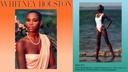
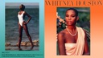
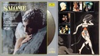
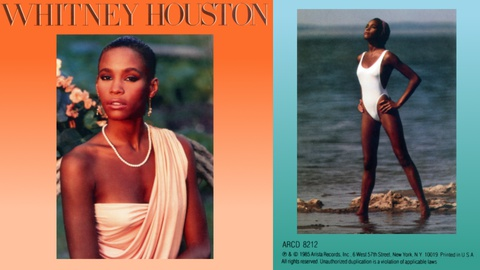
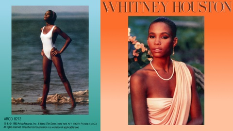
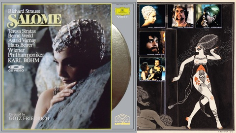
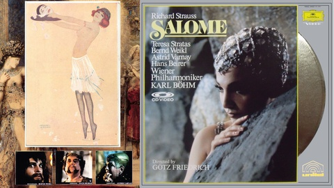

壁紙化：お気に入りジャケット集
一連に紹介する壁紙の中で、最も最近に編集した壁紙。CD "Whitney Houston" と LD "ベーム指揮 R. シュトラウス: サロメ" のジャケットを自分で撮ったものを GIMPで調整したり、パブリックドメイン系の画像と組み合わせた。


ここに画像を貼付することは「引用」の範囲に留まると私は思っているが、壁紙として日常的に使用するとなるとそういう言い方は難しいかもしれない。壁紙をダウンロードする場合は、商品の購入を私は求める。(もちろん、原著作者に別のどこかでいいと言ってもらってるなら、何ら問題はない。仮に、私の「編集著作権」みたいなものが生じていたとしても、それは放棄する。) なお、この個別ページは検索よけのメタタグを設定しており、検索よけしてないブログトップやカテゴリトップでは、本体へのリンクのない極小画像しか表示されない配慮をしている。その上で、できるだけ公式なサイトへのリンクをし、ブログ主本人によるリファラ付きのクリックを一度はしている。(これらの点について《デスクトップ壁紙公開についてのこのサイトのポリシー》で少し詳しい説明をしてある。) ここより下に貼ってある縮小画像をクリックすると、大きな壁紙がダウンロードされるはず。(一日100枚以上のダウンロードがあったあとなど、しばらくダウンロード用リンクが停止されることがあります。そうなっていたら、すみません。) なお、添字的な数字の抜けがあったりするのは、バージョン違いなどで、公開していないものがあるというだけのこと。 ■whitney_houston_cd.jpg

私が Windows で普段使っているアプリケーションウィンドウの配置だと、向かって左側のデスクトップアイコンの位置のみ壁紙が見え、他は Firefox と Emacs で埋まってしまう。でも、見える部分は要はアイコンで部分的に隠されるわけで、例えば写真の顔だけが隠れたり変な位置に来てしまうこともありえる。それで、今回、最初に一枚目を作ったところ、普段使ってるときは字しか見えないのが寂しくて、左右を逆にしたバージョンを作ったという経緯になる。 これはホイットニー・ヒューストンのデビューアルバムで、いきなりヒットしたもの。我々の世代で「黒ギャル」っぽいのに関心があるのは『ふしぎの海のナディア』の影響とかもあるのだが、こと私に関しては彼女というよりこのCD の写真の影響が大きい。 ホイットニー・ヒューストンは 2012年2月に死去したが、今も私は彼女の歌声が好きで、カラオケでは何とかその曲を歌おうとがんばったりもしてる。味のある歌とか好きな声・曲にあった声とかはいろいろあるけど、ナット・キング・コールといい、キャサリーン・バトルといい、(人類的に？)とびぬけて「うまい」と私が思う歌手は、黒人ばかり。やっぱ喉も違うのかなぁ…。 ジャケットはスキャナでスキャンして、グラビア印刷のディザ表現を GIMP でボカし、背景のグラデーションは削ったあと描きなおしている。 ●《Whitney Houston | The Official Whitney Houston Site》。ホイットニー・ヒューストンの公式サイト。この CD は、ARISTA というところから 1985年に出て、そこは今 SONY BMG 傘下ということらしい。この CD はアルバム名も "Whitney Houston" だというのが注意すべきところか。CD は今も HMV でもAmazon でもどこでも手に入るはず。今なら Deluxe 版のほうがいいのかな？ ■salome_ld_1.jpg と salome_ld_2.jpg

このジャケットの LD はベーム指揮の R. シュトラウス：歌劇「サロメ」をゲッツ・フリードリヒの演出で映画風に仕上げたもの。1974年の作品。その映像で見るサロメ役のストラータスはジャケットの幼い印象からすると正直「騙された」気がするほど違うが、オペラとはそもそもそんな感じの舞台芸術、「看板」はあくまでイメージ。そこから音と映像で納得と感動を導いていく。 LaserDisc の迫力あるデカいジャケットを最初スキャナでスキャンしたのだが、色がどういじろうにも納得できず、デジカメで撮影しなおしたものを GIMP で遠近法をいじって調整した。無地背景は一度削って描き直し、撮影で色が完全につぶれたロゴマークは、スキャナでのものを持ってきた。 ジャケットは正方形に近く、残りの余白を何で埋めるか？ジャケットと本編の印象の違いもあるし、LD からキャプチャした映像は今の時代かなり汚なく見えちゃうので、ジャケットから私が想像したサロメというのを Google の画像検索したとこから拾ってきて、それを使った。この壁紙は最近の作成なので、どういう画像を使ったかまで指し示すことができる。 ●《R．STRAUSS Salome DVD-Video - Deutsche Grammophon Gesellschaft》。 DVD 版の公式サイト。Amazon でも HMV でも DVD の輸入盤ならどこでも買えるが、日本語版の入手は現在は難しそう。私の LD は日本語字幕版で、当然 LD の字幕は消せない。 ●一枚目で使っている絵は George Barbier による "Salome - portrait of Tamara Karsavina (1914)" らしい。《{ feuilleton } The Salome archive》から辿っていった。 ●二枚目の皿を持ってるサロメの絵は Raphael Kirchner によるものらしい。《Salome - Raphael Kirchner - WikiPaintings.org》から持ってきた。 ●二枚目の裏面でほとんど見えなくなってる絵は、Gustave Moreau によるものらしい。英語の Wikipedia の Salome の項目で使っている絵。《File:Gustavemoreau.jpg - Wikipedia, the free encyclopedia》 更新：2013-09-25 初公開：2013年09月25日 19:55:36 最新版：2014年01月30日 18:03:38
Links: デスクトップ壁紙公開についてのこのサイトのポリシー: http://jrf.cocolog-nifty.com/column/2013/09/post.html ふしぎの海のナディア: http://www9.nhk.or.jp/anime/nadia/ (hbm) Whitney Houston | The Official Whitney Houston Site: http://www.whitneyhouston.com/us (hbm) R．STRAUSS Salome DVD-Video - Deutsche Grammophon Gesellschaft: http://www.deutschegrammophon.com/cat/0734339 { feuilleton } The Salome archive: http://www.johncoulthart.com/feuilleton/the-salome-archive/ (hbm) Salome - Raphael Kirchner - WikiPaintings.org: http://www.wikipaintings.org/en/raphael-kirchner/salome-1 (hbm) File:Gustavemoreau.jpg - Wikipedia, the free encyclopedia: http://en.wikipedia.org/wiki/File:Gustavemoreau.jpg (hbm)
後方参照 (1 件)
- URL参照 近況。天候のせいか、どうも鬱っぽい感じ。 2013年10月28日